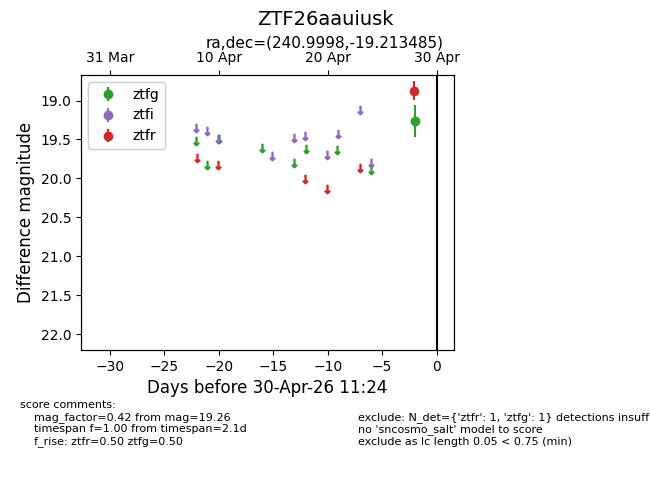
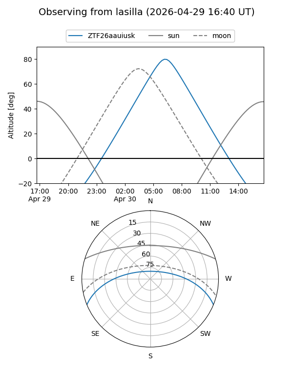
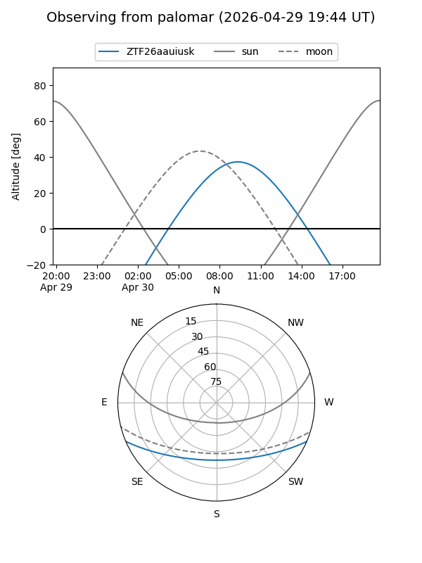

ZTF26aauiusk
Target ZTF26aauiusk at 2026-04-30 11:29
Aliases and brokers:
FINK: link
Lasair: link
ALeRCE: link
alt names
ZTF26aauiusk (ztf,fink_ztf)
Coordinates:
equatorial (ra, dec) = 240.9998,-19.21348
equatorial (HMS+DMS) = 16:03:59.94,-19:12:48.55
galactic (l, b) = (353.4093,+24.25241)
Flags:
Photometry:
last ztfg=19.26, ztfr=18.87
1 ztfg, 1 ztfr detections
Lightcurve

Visibility


Additional plots